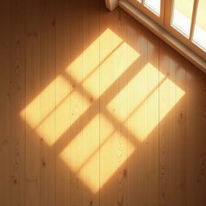

Sunlight
See the sun in your room
Point your phone at a window. Sunlight shows when direct sun comes through it and how far into the room it reaches, today, on the longest day and on the shortest day. Use it before you rent or buy, or to choose which room to sleep, work or grow plants in.
In Spain the app is called Sol en Casa, in France Soleil chez moi, and in Italy Sole in Casa.
Getting an accurate answer
- Stand inside and hold your phone upright, facing the window, the way you would to take a photo through it. When the direction settles, tap This is my window. Keep away from speakers, radiators and steel frames, which disturb the compass. If you are asked to, wave the phone in a figure 8 to calibrate it.
- Measure what is opposite. Tilt the phone up to the top of the building or tree line across the street and tap This is the top, or Nothing blocks the view. Sunlight treats sun below that angle as blocked.
- If the compass is unreliable, use Set it by hand and enter the direction from a map. A window facing due south is 180°, east 90°, west 270°.
- Checking a place you are not in? Search the address, then set the window direction by hand from the floor plan or a map.
What Sunlight models and what it doesn't. It calculates the sun's true position for the address and date and checks it against your window's direction, the depth of the window reveal, and the height of what is opposite. It does not know about individual trees, balconies above you, awnings or clouds. The room picture is a model room used to show the patch of light. Your own room's size and furniture will differ.
Questions people ask
What does the free version include?
One place, one window, and today's sun, including the time direct sun comes in and how far it reaches. Aiming and setting a window by hand are always free. Sunlight Full is a one-time purchase that adds more places, midsummer and midwinter, several windows and rooms per home, and share cards. It is not a subscription.
I bought Sunlight Full but it is locked on another device
Open Settings (the gear icon) and tap Restore purchase, signed in with the same Apple Account you bought it with.
Why does it say “no direct sun” when my room is bright?
Sunlight counts direct sun only: sunshine that falls straight through the glass. A north-facing room in the northern hemisphere can be bright all day with sky light but still get little or no direct sun.
What does “Strong afternoon sun in summer” mean?
It estimates how much direct sun comes through the window on a clear midsummer afternoon, between 2 pm and 9 pm. West-facing rooms often get the most, and they can overheat.
Can I fix a window I measured wrongly?
Yes. In Settings, Re-aim at window repeats the compass step and Re-measure repeats the building step. In the Rooms list, the ⋯ button on each window does the same.
Contact
Email xufei547@gmail.com. It helps to include the city, the window direction the app shows, and your iOS version.